在知乎上看到一篇关于 CNN 的平移不变性和平移等变性以及 CNN 对位置和深度信息预测的文章，觉得很有收获，因此转载在这里。里面也会穿插自己的理解。
提示：
转载文章中与不变性同时提到的 相等性（equivalence）其实是作者的错误，在图像中，一般同时出现的是 不变性(invariance) 和 等变性(equivariance)。而不是这里所说的相等性(equivalence)。
个人总结:
- Making Convolutional Networks Shift-Invariant Again:
- 窗户实验表明传统的CNN网络并不具有平移不变性。
- Max pooling 及
stride>1的卷积等操作涉及下采样，此操作对平移等变性影响更大。- 提出 Anti aliasing 方法，在下采样前进行 blur 操作，即进行低通滤波，降低输入内容的频率。
- Why do deep convolutional networks generalize so poorly to small image transformations：
- 作者发现
- 较小的图像变换或缩放导致网络的预测结果变换极大。
- 作者认为
- 卷积架构忽视了传统的采样定理。
- 数据增强仅能让CNN对类似训练集中的变换具有不变性。
- How much Position Information Do Convolutional Neural Networks Encode 详细内容
提出结论
- 位置信息是 zero-padding 透露的
- How Do Neural Networks See Depth in Single Images
实验发现
- CNN 网络是通过目标纵坐标来估计深度的
- 由于深度与目标纵坐标有关系，那么 pitch 角的影响很大
- 相对的，roll 的影响就比较小了
- On Translation Invariance in CNNs: Convolutional Layers can Exploit Absolute Spatial Location
以下为正文：
1. CNN是否存在平移和尺度的不变性和相等性
1.1 不变性和相等性的定义
在介绍卷积神经网络（CNN）之前，我们对于不变性和相等性的理解可能来自于传统图像处理算法中的，平移、旋转、光照和尺度等不变性，比如 HOG 梯度方向直方图，由于cell的存在，其对于平移、旋转有一定的不变性，另外由于对图像局部对比度归一化的操作，使其对于光照也有着一定的不变性。又比如说 SIFT 特征提取，其对于以上四点都有着不变性，其中由于尺度金字塔，使得对尺度也有不变性。这里我们对于不变性的理解就是，同一对象发生平移、旋转、光照变化、尺度变换甚至形变等，其属性应该一致。下面我们给出具体的不变性和相等性的定义。
其中不变性（invariance）的定义正如上文所说，因此其形式为：
而对于相等性（equivalence），顾名思义，就是对输入进行变换之后，输出也发生相应的变换：
不过如果我们只考虑输出对于输入不变性和相等性的情况，则会难以理解，因为我们更多地是想象着特征层面的映射，比如：

那么特征层面对于输出的影响我们可能考虑得比较少，但是却实质存在，比如目标在图像中的平移和尺度等变换，在目标检测任务中，必须要使得网络具有相关的变换相等性，由此捕捉目标的位置和形状变化。而在图像分类、目标识别、行人重识别等任务中，又必须使得网络具有相关变换的不变性。这两点也是目标检测和行人检索领域中一个经典的矛盾问题，目前好像还没有特别好的解决，更多地是分阶段地执行不同的任务，防止特征共用。比如：经典的两阶段目标检测任务中，第一阶段是粗检测和前景背景分类，第二阶段是精修和具体类别分类，有一定的偏重。行人检索算法则大多是先检测后识别的策略。当然除了不变性和相等性的问题，还存在类内差异的问题，比如不同的人对于检测而言都是行人类别，对于识别而言则是不同的人，这对于特征提取也存在挑战。
这部分观点应该是来自 DCNv2
1.2 CNN网络的执行过程
我记得我几年前第一次接触到深度学习的时候，对于全连接和 CNN 的局部连接形式，都有平移、尺度不变性的说法。对于全连接网络，由于下一层的每个节点都会与上一层进行连接：

因此无论输入发生了平移、尺度等什么变换，只要其属性没变，全连接网络更能捕捉其中的不变性。而对于卷积神经网络，我们都知道两个特点：局部连接和权值共享。

对于局部连接，因为全连接参数太多，容易造成过拟合，并且图像领域更多地关注局部细节信息，所以局部连接方式有效。至于权值共享，也有减少参数的作用，很像图像处理中的滤波器。我们早期对于其不变性的理解更多是遵循一个宏观的感受，即由于卷积核的移位滤波，上一层的特征到下一层的特征相对位置 宏观不变，直到最后输出，类似于全连接的效果，从而获得不变性。
1.3 CNN网络潜在问题与改进
正因为我刚说的宏观不变，使得输入在经过多次卷积、池化之后，微观/细节的变化累积放大，从而失去了这种不变性，接下来我会结合两篇论文进行介绍。
第一个是为了解决 CNN 平移不变性对抗性攻击的一篇 ICML2019 论文《Making Convolutional Networks Shift-Invariant Again》。这篇文章主要讨论了CNN网络中的降采样对于平移不变性的影响：

上图是对于一个窗户分别采用从0~7的平移量，其特征图与不平移的差异，可以明显看到，特征图出现了波动。相应地，上半部分是利用 pix2pix 生成的图像，我们可以看到随着平移量的增大，窗户中的竖直线从两根变成了一根。 这一点就表明传统的 CNN 网络并不具有平移不变性。
首先，作者做了这样一个小实验，即采用 max pooling 对一维向量[0011001100]进行池化，由此得到向量[01010]：

接着，如果将输入向右平移一个单位，则得到向量[111111]：

很明显，平移相等性和不变性都丢失了。接着作者做了进一步实验，利用余弦距离来刻画平移相等性，采用 VGG 网络对 Cifar 数据集进行试验：

其中颜色越深说明差异越大，可以看到每次 max pooling 都增加了特征的差异性，不过作者将 max 和 pool 操作分开了，为了区分取最大值和降采样的影响：

很明显，降采样对于平移相等性的影响更大，而 CNN 中涉及到降采样的操作有：池化（max pooling 和 average pooling）和带步长的卷积（strided convolution）。对此作者提出了一种名为 Anti_aliasing 方法，中文叫做抗锯齿处理。传统信号处理领域中对于抗锯齿的技术，一般要么增大采样频率，但由于图像处理任务一般都需要降采样，这一点不适合。要么采用图像模糊（bluring）技术，根据 Nyquist 采样理论，是给定采样频率，通过降低原始信号的频率来使得信号能够被重构出来 ，如下图所示。对模糊化处理和未处理的原图像进行下采样，得到图中底部的两张图，模糊化处理的原图像下采样的图像还能看出一些轮廓，而未处理的原图像下采样的图像就显得更加混乱。
对橙色部分的理解： 在信号处理中，根据 奈奎斯特 采样定理，如果采样频率大于信号最大频率的两倍，则原始信号能够被完全恢复出来。在这里，pooling 就是一种下采样的过程，当其参数固定后，相当于其采样频率也是固定的。在原图中，有很多边缘等细节，属于高频内容。因此，如果直接对其进行 pooling，也就是下采样，则采样频率无法达到原图最大频率的两倍，从而无法恢复出原图内容。这时，可以逆向思维，通过降低原图的频率，则相对地提高了 pooling 的采样频率。因此，先对原图进行一次低通滤波，也就是模糊处理，来降低它的频率，这样，经过 pooling 下采样后的图像就相对原图下采样的结果可理解了很多。
关于图像滤波的内容，可以参考 【转载】图像与滤波

作者就是采用了模糊的方式，提出了三种不同的 blur kernel：
- Rectangle-2：
[1, 1]，类似于均值池化和最近邻插值； - Triangle-2：
[1, 2, 1]，类似于双线性插值； - Binomial-5：
[1, 4, 6, 4, 1]，这个被用在拉普拉斯金字塔中。
每个核都需要归一化，即除以核内所有元素之和，然后加入到降采样过程，即在降采样之前使用 blur kernel 进行卷积滤波：

可以看到其效果很不错：


代码和模型见：https://richzhang.github.io/antialiased-cnns/或者https://github.com/adobe/antialiased-cnns
第二篇是同年发表在 JMLR 的一篇论文《Why do deep convolutional networks generalize so poorly to small image transformations?》。作者首先给出了几组示例，分别表示了平移、尺度以及轻微图像差异对网络预测分类置信度的影响：

作者认为 CNN 忽视了采样定理，这一点之前 Simoncelli 等人已经在论文 Shiftable multiscale transforms 中验证了二次采样在平移不变性上的失败，他们在文中说：
我们不能简单地把系统中的平移不变性寄希望于卷积和二次采样，输入信号的平移不意味着变换系数的简单平移，除非这个平移是每个二次采样因子的倍数。
我们现有的网络框架中，越深的网络，降采样次数越多，因此出现的问题更多。紧接着，作者提出了几点论述：
- 如果 是经过卷积操作且满足平移不变性的特征，那么全局池化操作 也满足平移不变性；
- 对于特征提取器 和降采样因子 ，如果输入的平移都可以在输出上线性插值反映出来：
由香农-奈奎斯特定理知， 满足可移位性，要保证采样频率至少为最高信号频率的2倍。
接下来，作者对这些问题做了一些改进尝试：
- 抗锯齿，这个就是我们刚刚介绍的方法；
- 数据增强，当前在很多图像任务中，我们基本都会采用随机裁剪、多尺度、颜色抖动等等数据增强手段，的确也让网络学习到了部分不变性；
- 减少降采样，也就是说只依赖卷积对于输入尺度的减小来变化，这一点只对小图像适用，主要是因为计算代价太高。
2. CNN对于位置和深度信息的预测
2.1 CNN如何获取目标的位置信息
最早接触神经网络和深度学习相关任务时，我的感觉就是这类算法本质是做的分类任务，比如图像分割是对前景背景的分类和具体类别分类，识别任务就是类间类内的区分任务。其中图像分割任务就利用了 CNN 中的部分相等性，那么对于目标检测任务中的目标位置回归是怎么获取的呢？我们可以知道的是同样是对目标位置的搜索，在单目标跟踪任务中，存在有置信图：
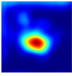
但是置信图本质上是对区域进行搜索得到的，因此可以近似为对多个子区域的识别过程，所以单目标跟踪中的目标定位也可以用分类的理解，但是目标检测则不好用分类来理解了。
接下来我们思考一个问题，我们所设计的网络究竟包含了哪些信息？图像特征、网络结构（卷积核大小、padding）。从上一章我们可以知道，网络可以学习到一定的相等性：
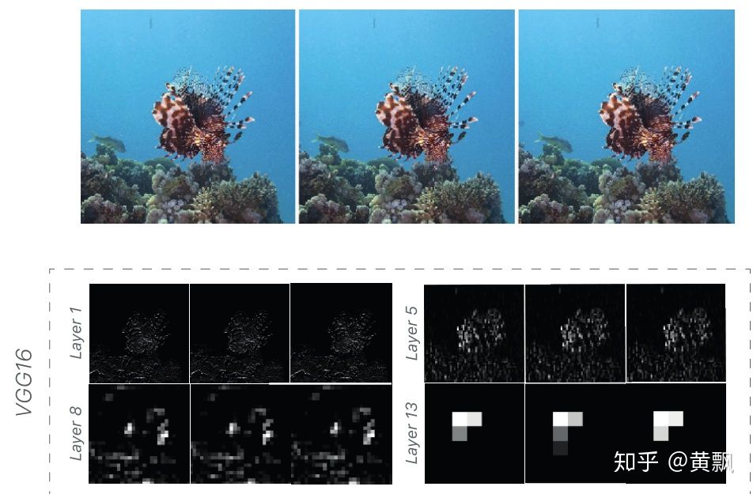
因此，通过不断地训练，网络在最后的特征输出中是可以通过对应的特征数值和区域大小，结合一定的倍数（降采样大小）估计目标尺度的。但是对于目标的位置，我们人眼对于目标位置的判定是通过坐标系的，即目标距离图像的边缘距离，但是网络是如何了解这一信息的呢？
对橙色部分的理解:对一个物体的检测包括两个部分，位置(x,y)和尺度(w,h)，这里所说的，就是如何从网络的输出特征中计算得到目标的尺度的。这里认为，通过 对应的特征数值（即找到激活区域）和 区域大小 （激活区域的大小），结合一定的倍数 (feature map 相对于原图降采样的倍数)，可以估计出目标在原图的尺度。
《How much Position Information Do Convolutional Neural Networks Encode?》这篇文章做出了回答。
作者首先做了一组实验：
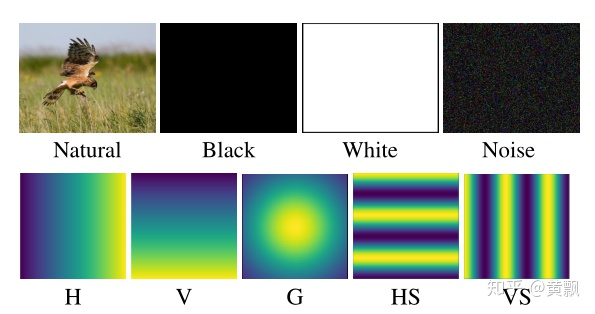
对于不同的输入图像，采用多种 mask 扰动，H、V、G 分别代表水平、竖直和高斯等分布，用这种方式生成多种 groundtruth，对于这点我们可能对单目标跟踪中以目标中心为均值的高斯分布比较熟悉。结果发现：
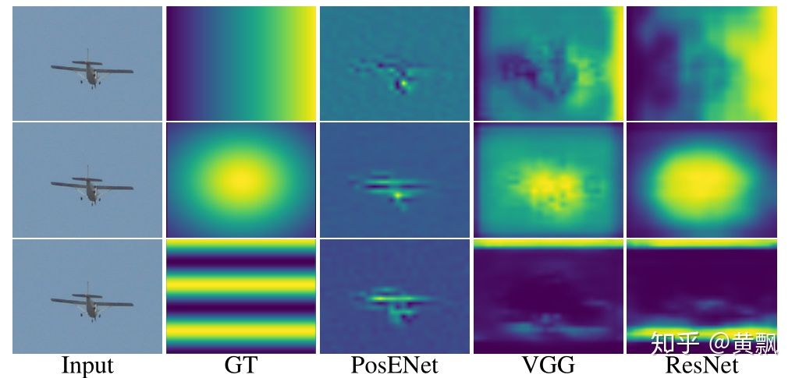
GT 是三种分布生成的 groundtruth，PosENet 是作者提出的网络，没有 padding。我们可以看到 PosENet 并没有得到位置分布信息，而是保持了相等性。而存在 padding 的 VGG 和 ResNet 则都预测出了位置分布。由此可见 padding 对于位置的作用，也对上一章的内容作了补充，padding 对于平移不变性和相等性也有影响。
不过这里我们可能不好理解，我做了个小测试，不过不一定是这么做的，仅仅方便我理解：
上面是两个不同位置“目标”的卷积结果，可以看到，从输出结果得不到什么位置反映，如果加入 padding：
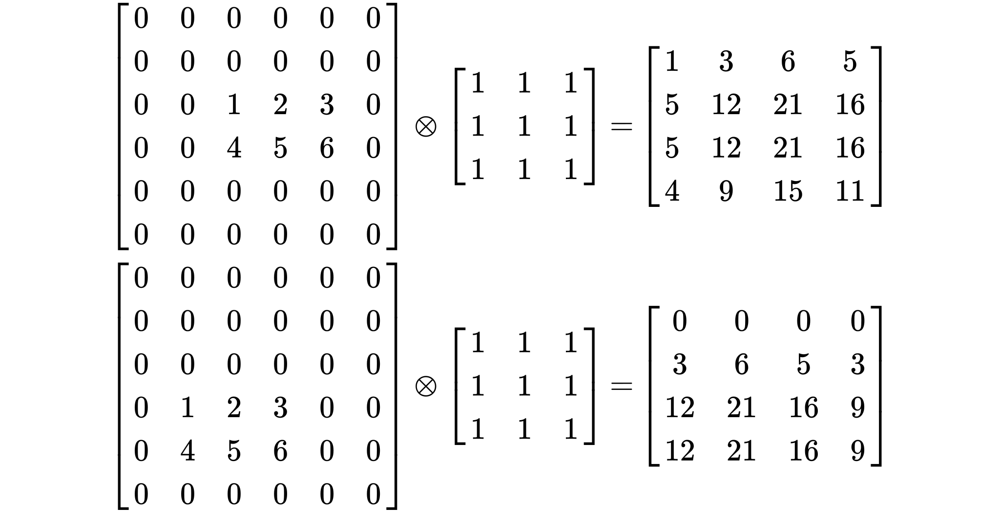
首先我们可以知道的是，加入了 zero-padding 之后，目标边缘相对中心的输出更小了，其次目标距离图像边缘距离越远，其特征映射中出现0的次数越多。所以我猜网络就是在训练过程中让 padding 和这个相对的关系对应上了，如果没有 padding，目标距离边缘越远，同样出现0的次数也会越多，但问题在于无法跟 padding 造成的边缘数值小，中心数值大的特殊分布相比。当然，以上仅仅是我个人的理解，为了帮助我加深印象罢了。也有人说加入了 padding 影响了 CNN 的平移相等性，从而使得 CNN 学到了位置信息，但这个不大好解释。
不过有关 padding 的问题，在 CVPR2019 的一片单目标跟踪算法 SiamRPN++ 中也做了探讨。其出发点在于为何 Siamese 网络无法扩展为大型网络，其原因就在于 padding 影响了平移相等性，从而让目标位置的分布发生了偏移。所以作者通过对目标中心的随机扰动，使得网络克服自身的偏移：
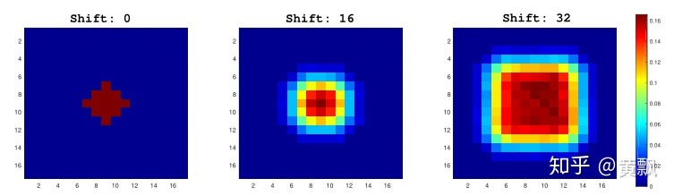
也有一些研究探索了如何让 CNN 结合绝对位置信息，比较出名的应该是当前很热门的 SOLO 单阶段实例分割算法。SOLO 的出发点很简单，我们都知道语义分割只需要分割出不同类别的目标，而实例分割对于同一类别的个体还需要区分。但是显而易见，同一类别的目标只要位置和形状不同则可以区分。因此 SOLO 就是将位置和形状（用尺寸简化）信息结合进来。具体而言，就是将输入系统的图像统一划分为 S\timesS 的网格，如果对象的中心落入网格单元，那么这个网格单元就负责预测语义类别以及分割该对象实例。
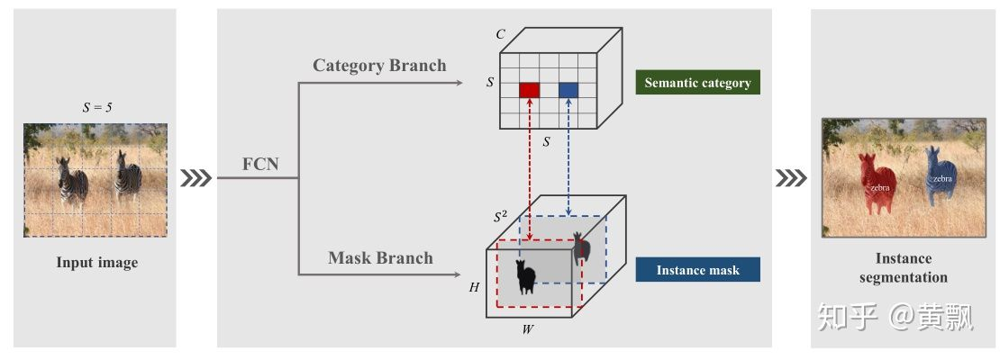
特别地，SOLO 算法中采用 CoordConv 策略（代码：https://github.com/uber-research/coordconv），该算法将每个特征区域的坐标信息结合进来，从而让网络显示地学会记忆特征的绝对位置信息。SOLO 通过这个策略提升了 3.6AP，并且论证只需要一层提供该信息即可达到稳定的提升。
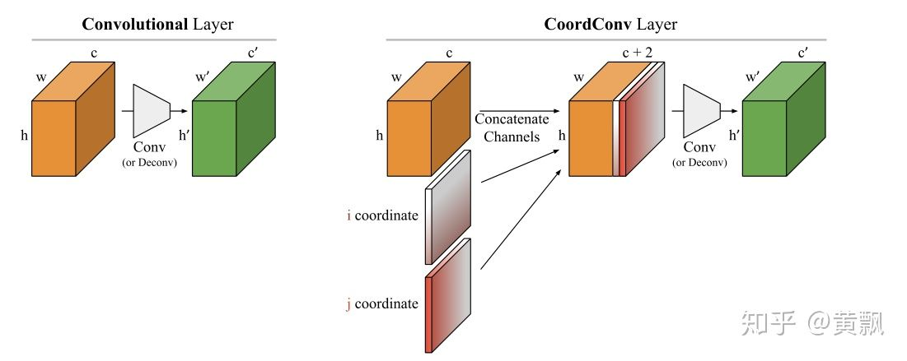
2.2 CNN如何预测目标的深度信息
深度估计也是一个类似的问题，不同的是，图像中并没有包含深度信息，但是网络是如何获取深度信息的呢。How Do Neural Networks See Depth in Single Images?这篇文章给出了回答，关于这篇文章 NaiyanWang 老师已经在博客里讨论过，我这里也就再整理下。
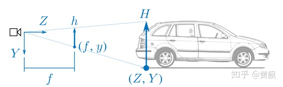
我们可以看到，物体的绝对深度与相机位姿有着很大关系，那么 CNN 如何学习到这种需要几何先验的绝对信息的呢？作者做了这样一个实验：
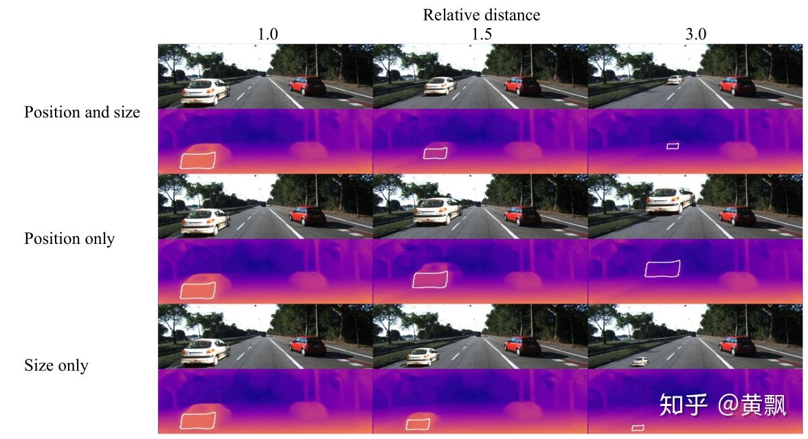
上图中作者做了三组实验：同时变化目标位置和尺寸、只变化位置以及只变化尺寸，我们从上面的定性结果好像看不出什么问题，下面是定量的结果：
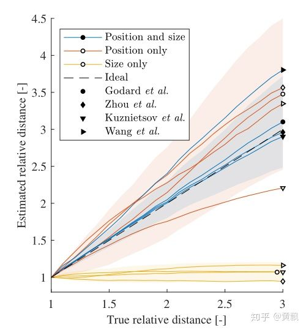
可以发现，尺度对于深度信息的预测没有什么影响，也就是说CNN网络是通过目标纵坐标来估计深度的，所以说网络实际上是在过拟合训练集，从中学习到一些固定场景下的深度和相对位置的对应关系。
作者又讨论了相机运动对于深度预测的影响，既然深度与目标纵坐标有关系，那么 pitch 角的影响应该很大：
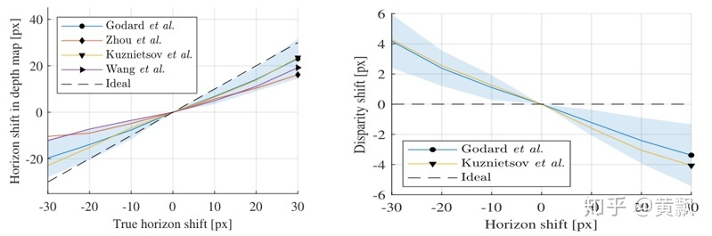
可以发现，pitch的确影响比较大，相对的, roll 的影响就比较小了：
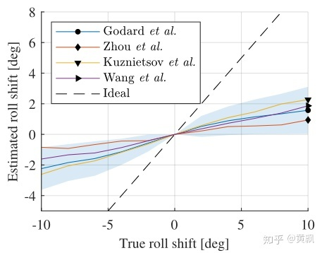
最后作者还讨论了颜色和纹理对深度估计的影响：
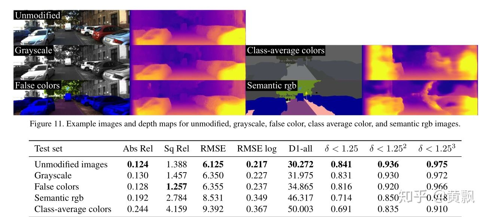
可以发现，仅仅是改变目标的颜色纹理，深度估计的效果也会下降，可将CNN网络在训练时有多“偷懒”，不知道如果将上述实验变成数据增强的手段的话会让深度估计网络失效还是变强。
2020.3.18更新
昨天碰巧看到一篇 CVPR2020 的文章《On Translation Invariance in CNNs: Convolutional Layers can Exploit Absolute Spatial Location》，其中也提到了 CNN 中的平移不变性问题和绝对位置信息编码问题，其切入点是 CNN 中的边界问题。
作者首先以三种卷积方式为例，full/same/valid，各自的区别在于 padding 的大小，具体方式我就不细说了，给个示意图：
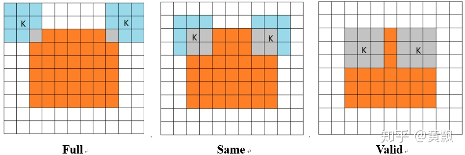
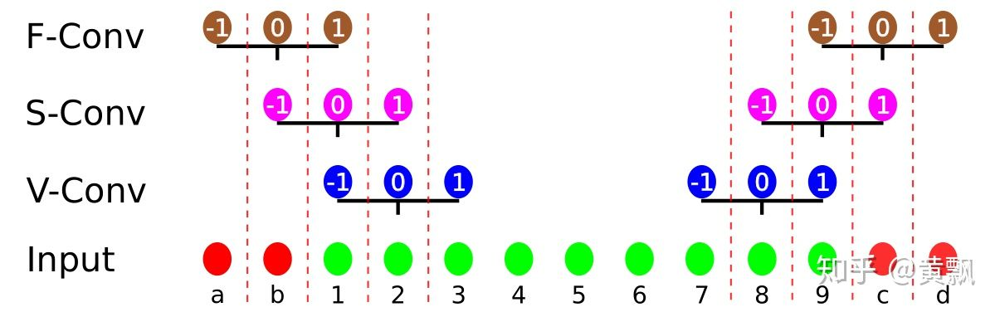
其中红色部分表示 padding，绿色部分表示边界区域。很明显，valid模式下卷积核最右边的1永远无法作用于绿色部分的1，same模式下的卷积核最右边 1永远无法作用于绿色部分的1 。作者以 zero-padding 和circular-padding 两种模式做了一个例子说明：
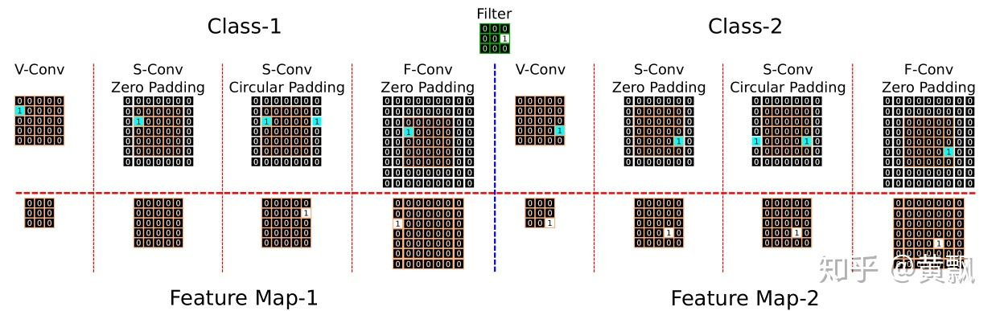
可以看到 Class-1 中前两个例子都没有检测到1，valid 和 same+zero-padding 模式对于待卷积区域的绝对位置比较敏感。紧接着作者又分析了每个位置被卷积的次数：
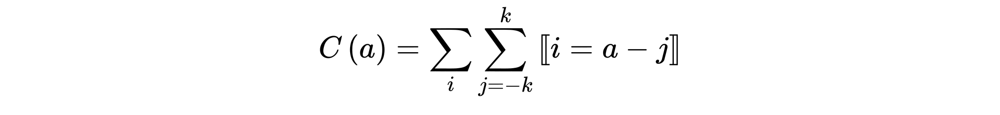
由此引出距离图像边界多远时某一固定像素可以被检测到这一问题，于是作者通过给图片四周添加不同大小的黑色边界进行试验：
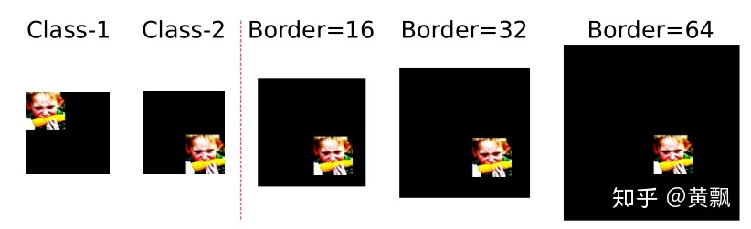
有意思的是，增加了黑色边界之后分类的准确率都出现了明显的下滑，只不过不同的训练策略和不同的 backbone 的抗干扰能力不同罢了。
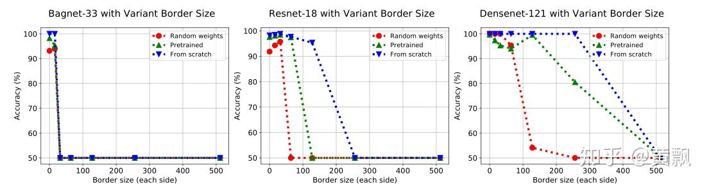
为了定量分析各个卷积策略对于边界的处理区别，建了一个分类数据集，特殊点都分布在边界：
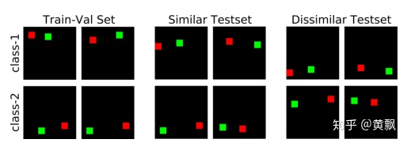
结果差别很大：
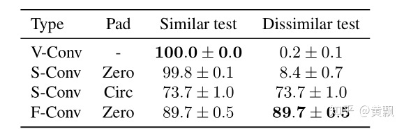
可以发现，跟之前的观察结果一样，前两种策略的泛化能力很差，而基于 Circular padding 和 full convolution 的模式效果最好。接着作者为了降低边界的影响，采用了前文介绍卷积平移不变性里面提到的 blur pooling+Tri3 卷积核。然后对比 S-conv+circular padding 和 F-conv 两种策略对于不同的图像对角平移的鲁棒性：
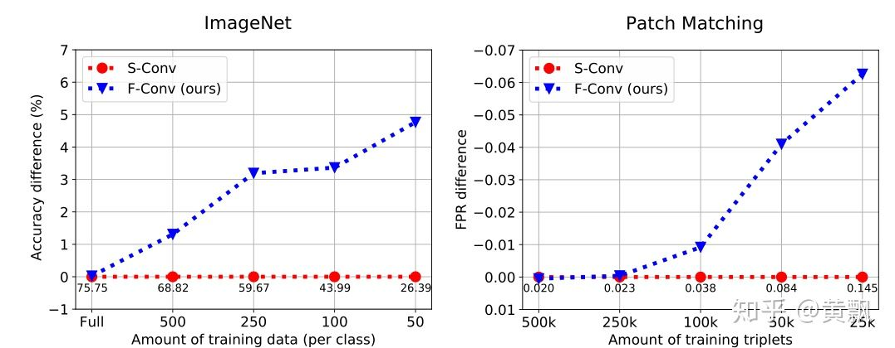
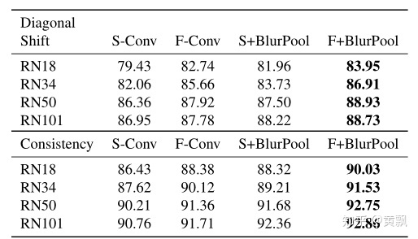
结果显示 Full conv 模式效果更好，在后续实验中还说明了其有助于降低过拟合风险，对于小数据集更有效。
代码即将开源 https://link.zhihu.com/?target=https%3A//github.com/oskyhn/CNNs-Without-Borders